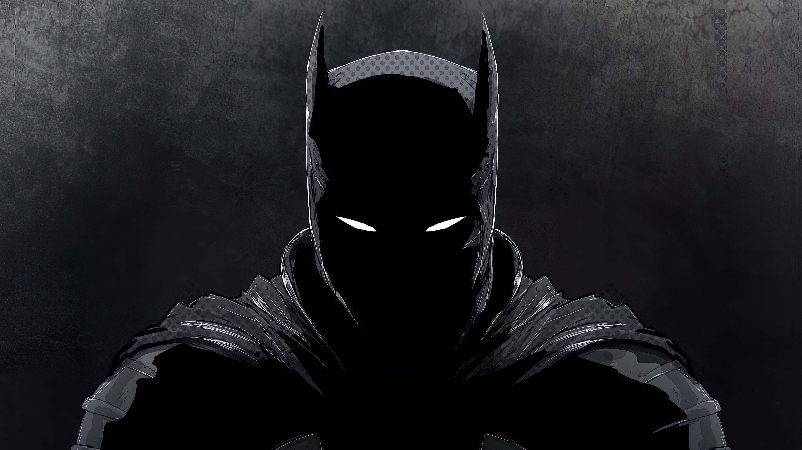

Quem é o Batman?

O Batman é um dos super-heróis mais famosos do mundo e faz parte do universo da DC Comics.
Seu verdadeiro nome é Bruce Wayne, um bilionário que vive na cidade fictícia de Gotham City.
Durante o dia ele é um empresário e filantropo, dono da empresa Wayne Enterprises, mas durante a noite combate o crime como o Cavaleiro das Trevas.
Diferente de muitos heróis, Batman não possui superpoderes. Ele utiliza sua inteligência, habilidades de investigação,
treinamento físico intenso e tecnologia avançada para derrotar criminosos perigosos.
O símbolo do morcego representa o medo que ele deseja causar nos criminosos, usando o terror psicológico como uma de suas principais armas.
Origem
A história de Batman começa quando Bruce Wayne ainda era criança. Após sair de um cinema com seus pais,
Thomas Wayne e Martha Wayne, a família foi abordada por um assaltante em um beco e seus pais foram assassinados.
Esse evento traumático marcou profundamente Bruce, que decidiu dedicar sua vida a combater o crime.
Ele treinou pelo mundo aprendendo artes marciais, técnicas de detetive e estratégias de combate.
Ao retornar para Gotham City, criou a identidade do Batman para proteger a cidade e impedir que outras pessoas passassem pela mesma dor que ele.
Habilidades do Batman
- Inteligência extremamente elevada
- Grande habilidade de detetive
- Treinamento em diversas artes marciais
- Estratégia e planejamento avançado
- Excelente preparo físico
- Uso de tecnologia avançada
Batman também utiliza diversos equipamentos famosos como o Batmóvel,
o cinto de utilidades, o batarang e o Batcomputador.